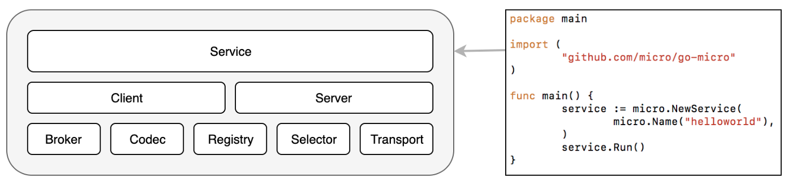
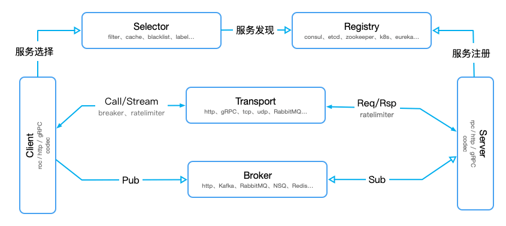
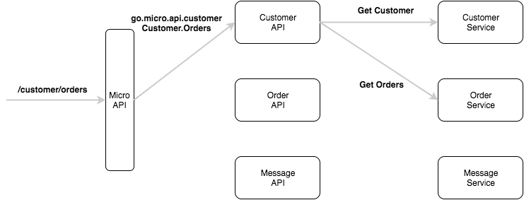
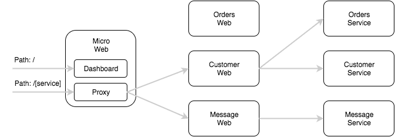

本文最后更新于：5 个月前
Go-Micro
特点
- 可插拔
- 可以直接go-micro的默认实现或者在go-plugins中选择基于不同组件实现的插件库,甚至可以基于go-micro框架抽象的接口来实现自己的插件库
- 更容易扩展
- 专注一个业务功能
- 耦合松散，维护简单
Go-Micro系统架构


Registry
注册表提供可插入的服务发现库，来查找正在运行的服务。当前的实现是consul，etcd，内存和kubernetes。如果您的喜欢不一样，该界面很容易实现。
Selector
选择器通过选择提供负载均衡机制。当客户端向服务器发出请求时，它将首先查询服务的注册表。这通常会返回一个表示服务的正在运行的节点列表。选择器将选择这些节点中的一个用于查询。多次调用选择器将允许使用平衡算法。目前的方法是循环法，随机哈希和黑名单。
Broker
Broker是发布和订阅的可插入接口。微服务是一个事件驱动的架构，发布和订阅事件应该是一流的公民。目前的实现包括nats，rabbitmq和http（用于开发）。
Transport
传输是通过点对点传输消息的可插拔接口。目前的实现是http，rabbitmq和nats。通过提供这种抽象，运输可以无缝地换出。
Codec
编码
Client
客户端提供了一种制作RPC查询的方法。它结合了注册表，选择器，代理和传输。它还提供重试，超时，使用上下文等。
Server
服务器是构建正在运行的微服务的接口。它提供了一种提供RPC请求的方法。
Plugins
提供go-micro的go-plugins插件。
https://github.com/micro/go-plugins
api
micro api 构建在 go-micro 上，利用它进行服务发现，负载平衡，编码和基于 RPC 的通信。对 API 的请求通过 HTTP 提供，并通过 RPC 进行内部路由.
由于 micro api 在内部使用 go-micro, 因此它也支持插件，因此可以随时切换为 kubernetes api 的 consul 服务发现或 gRPC.

web
Micro Web提供了一个用于查看和查询服务的仪表板.

grpc.NewService和micro.NewService()
在go-micro中主要提供了两种创建micro.Service的方式：
第一种方式下底层传输协议使用的是grpc；第二种方式下底层传输协议使用的是http + protobuf。从实际比较来看，gprc的性能明显好于micro。
本博客所有文章除特别声明外，均采用 CC BY-SA 4.0 协议 ，转载请注明出处！